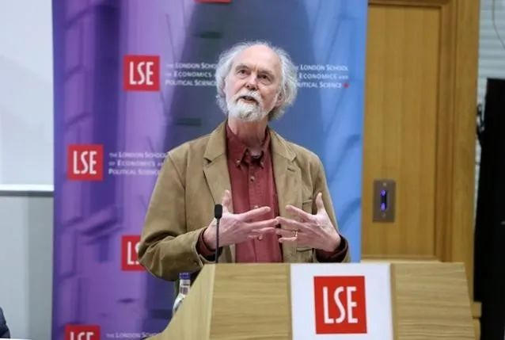
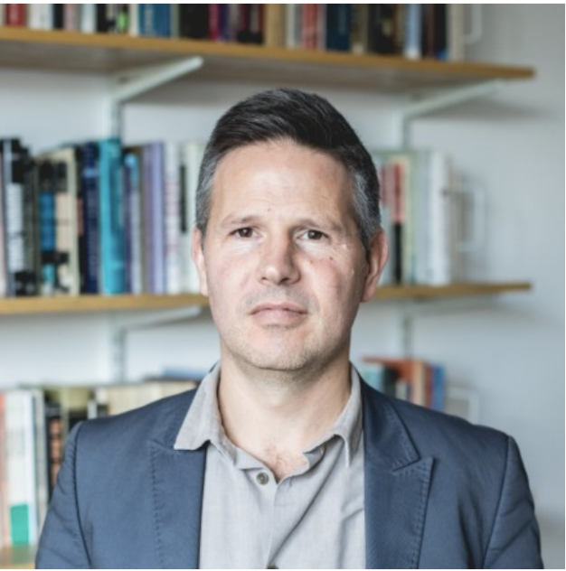

收录于合集

新书资讯
出版信息
[英]巴里·布赞、[英]乔治·劳森：《全球转型：历史、现代性与国际关系的形成》，崔顺姬译，李佳校，上海：上海人民出版社2020年7月第1版。
作者简介
【英】巴里·布赞（Barry Buzan），英国社会科学院院士、伦敦政治经济学院国际关系学系荣誉教授，并在哥本哈根大学、中国外交学院、国际关系学院、吉林大学等知名大学担任名誉教授。布赞教授是国际关系领域和国际安全研究界世界级权威、哥本哈根学派创始者之一和英国学派领军人物。曾任伦敦政治经济学院蒙塔古·伯顿讲席教授，英国国际研究协会主席（1988-1990）；（北美）国际研究协会副主席（1993-1994年）；《欧洲国际关系杂志》主编（2004-2008）。其代表作包括：《世界历史中的国际体系：国际关系研究的再构建》（2000年，与理查德·利特尔合著）、《从国际社会到世界社会？》（2004年）、《国际安全研究的演化》（2009年，与琳娜·汉森合著）、《英国学派理论导论》（2014），和《全球国际关系学的形成：百年起源与演变》（2019年，与阿米塔·阿查亚合著）等。

【英】巴里·布赞（Barry Buzan）
【英】乔治·劳森（George Lawson），撰写本书时为英国伦敦政治经济学院国际关系学系副教授，现为澳大利亚国立大学国际关系学系教授。他聚焦于国际关系与历史社会学之间的交叉研究，以及激进的变革进程，尤其是大变革。著有《解剖革命》（ Anatomies of Revolution , 2019）、《全球历史社会学》（ Global Historical Sociology , 2017），《协商的革命》（ Negotiated Revolutions , 2005），主编有《全球1989》（ The Global 1989 ，剑桥大学出版社，2010年，与克里斯·阿姆布拉斯特、迈克尔·考克斯合作）。

【英】乔治·劳森（George Lawson）
译者简介
崔顺姬，浙江大学公共管理学院国际关系教授。英国伦敦政治经济学院国际关系博士（2008），曾任伦敦政治经济学院亚洲研究中心博士后研究员（2007/2008），英国社会科学研究院（British Academy）访问学者（2010），美国国务院富布莱特驻校学者(Fulbright Scholar-in-Residence, 2012-2013)。主要研究成果包括：“Securitization and the Merger of Great Power Management and Global Governance: The Ebola Crisis’, Analyses and Alternatives (2019, 与Barry Buzan合著)；“China-US Climate Cooperation: Creating a New Model of Major- Country Relations?,” Asian Perspective (2018); “Great Power Management in International Society,” The Chinese Journal of International Politics (2016, 与Barry Buzan合著)；《人的发展与人的尊严: 再思人的安全概念》（《国际安全研究》2014年）；‘Beyond History: Non- Traditional Security Cooperation and The Construction of Northeast Asian International Society,’ Journal of Contemporary China (2013); “(De)Securitising Frontier Security in China: Beyond the Positive and Negative Debate,” Cooperation and Conflict (2011, 与李佳合著)；《安全治理：非传统安全能力建设的新范式》（《世界经济与政治》2010年，与余潇枫合著）。
崔顺姬
李佳，博士，浙江大学外国语言文化与国际交流学院副教授、跨文化与区域研究所副所长。主要研究方向是非传统安全、国际组织、公共政策领域，译有《人的安全：概念及应用》，在《浙江大学学报》、《世界经济与政治》等发表相关论文、译文若干篇，获得省部级科研奖两项。
李佳
内容简介
长期以来，国际关系研究将威斯特伐利亚体系作为起点，将两次世界大战、冷战的开始和结束等重大事件作为国际关系的标志性时间节点，关注和平与战争、权力格局等，而很少注意甚至基本忽视了国际体系的整体性与关联性。事实上，“漫长的十九世纪”（1776-1914）中所发生的全球转型，对当今国际关系的主要特征有着深远的影响。全球转型中出现的一系列复杂格局：工业化、理性国家建设和“进步”的意识形态重塑了权力模式（mode of power），在不均衡的全球化进程中开启了能够驾驭现代性变革的国家和未能驾驭现代性变革的国家之间的权力鸿沟，使“无中心的多元世界”让位于“中心- 边缘”的世界格局，并让西方国家在其中获得了全面的优势。此外，诸多的国际行为体也由此生成：理性民族国家、跨国公司、政府间国际组织与非政府组织，它们已经成为国际事务的主要参与者。一言以蔽之，我们今天所熟知的全球性结构和国际行为体，实际上是“漫长的十九世纪”中全球转型的产物。如今，这一“中心- 边缘”的世界格局正在经历又一转型，即走向“去中心”的世界格局。然而，国际关系学科对此的关注严重不足。《全球转型：历史、现代性与国际关系的形成》正是成书于对这种整体性忽视的担忧之中。该书认为，我们仍然并可能仍将长期处于一个被十九世纪的全球转型所定义的世界之中，如果不对全球转型之重大意义进行深刻的考察，也就不能真正理解国际关系本身及其主题。
本书认为，全球转型最关键的三个组成要素在于：工业化、理性国家建设、以及“进步”的意识形态。其中，两次工业化浪潮改变了权力的模式及来源，理性国家塑造了今日世界的基本形态，而包括帝国主义、“科学”种族主义、民族主义等在内的“进步”的意识形态则塑造了文明的标准，勾画出“文明”与“蛮族”两个世界的分野。十九世纪的一系列深刻变化是史无前例的，人类社会第一次在如此之短的时间内经历如此彻底的权力变化。全球转型中所孕育的现代性将社会资源引入权力模式之中，至此权力不再仅仅与实体资源划等号。总而言之，十九世纪中涌现的深刻变革，塑造了当今世界的基本面貌。因此，国际关系学科有必要对自身重新加以审视。《全球转型》一书将十九世纪的历史引入台前，以全球转型作为国际关系的起点，重新定位国际关系学科的根基，并确立理解和教授世界历史与国际关系之间的关系的新途径，为我们理解当今全球转型的历史脉络提供了一种有意义的视角。
图书目录
中文版前言
英文版前言
缩略语
导 论 全球转型与国际关系
第一部分 全球转型与国际关系
第一章 全球转型
第二章 国际关系学与19世纪
第二部分 现代国际关系的形成
第三章 缩小的世界
第四章 进步的意识形态
第五章 政治单元的转型
第六章 建立“中心-边缘”国际秩序
第七章 “中心-边缘”国际秩序的衰弱
第八章 大国、大国关系与战争的转型
第三部分 启示
第九章 从中心化的全球主义到去中心化的全球主义
第十章 反思国际关系学
参考文献
名家推荐
这部投入巨大且引人入胜的著作应该即刻被认定为国际关系学科的基本教材。布赞和劳森完成了一部常人难以完成的宏伟的综合性著作。
——姆拉达·布科万斯基（Mlada Bukovansky），马塞诸塞州史密斯学院政治学教授
这部投入庞大的著作，不仅告诉我们全球现代性是如何形成的，还向我们阐释了国际关系学科之前未能理解这一转型的原因，以及我们应该如何对全球现代性进行分析并加以理论化。这本书既包括现代全球力量的简明历史，又包括对国际关系研究的持续批判和规划，是全球社会科学所能提供的最好的作品之一。
——朱利安·戈（Julian Go），波士顿大学社会学教授、研究生院主任
在这部印象深刻的著作中，布赞和劳森有力地论证了现代国际关系的起源可以追溯到漫长的19世纪。最为重要的是，这种历史观不仅关乎国际关系领域的历史社会学，也因其提供的新的时间基准替代了传统的划分法，因而使本学科能够驾驭那些继续渗透在学科中的许多想当然的假设（和英雄神话）。
——约翰·霍布森（John M. Hobson），谢菲尔德大学政治与国际关系学教授
《全球转型》是一项巨大成就，是一次对国际关系具有里程碑意义的干预。对于任何有兴趣了解全球秩序的起源、其有争议的格局及其可能的未来的人，本书应该是必读书目。
——安德鲁·菲利普斯（Andrew Phillips），昆士兰大学国际关系与战略高级讲师
本书的有些主张很令人信服、很有说服力、而且很正确。读后我们不禁对自己说：“当然如此！对此还会有人持不同的想法吗？”任何对世界政治的起源和未来走向的论争感兴趣的人，都应该读此书。
——丹·内克森（Dan Nexon），乔治城大学副教授，《国际研究季刊》主编
相关讨论与回应
针对《全球转型》一书，译者崔顺姬教授曾于2016年底在浙江大学举办中英学者双边研讨会，邀请来自中国的多位学者和原作者对本书进行了初步的讨论与回应（研讨会综述详见第二条推文）。在此基础上，在《全球转型》译本出版之际，应浙江大学崔顺姬教授之邀，复旦大学任晓教授推荐，《国际关系研究》特邀请北京大学、吉林大学、复旦大学、浙江大学的有关学者围绕此书分别撰写了笔谈，对该书所涉及的有关问题进行了热烈的学术讨论，布赞和劳森二位教授则对中国学者的论点进行了详细的回应。该“专题研讨”将由《国际关系研究》2020年第四期隆重推出，以助推国际关系的研究，敬请期待。
**
**
**
**
**
**
添加 “国小政”微信
获取最新资讯